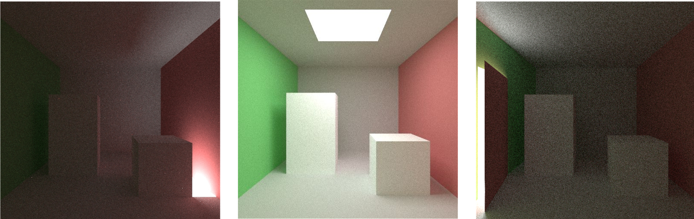
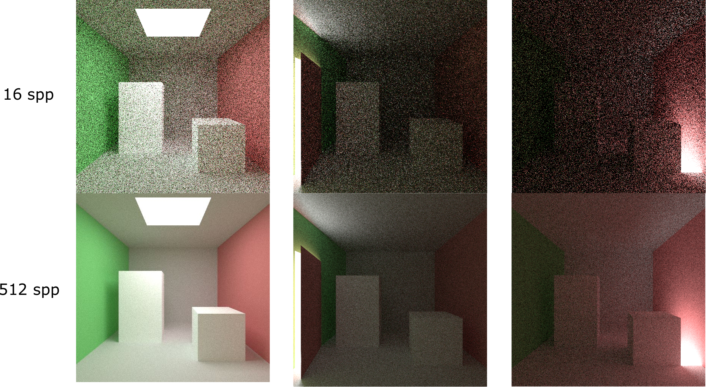
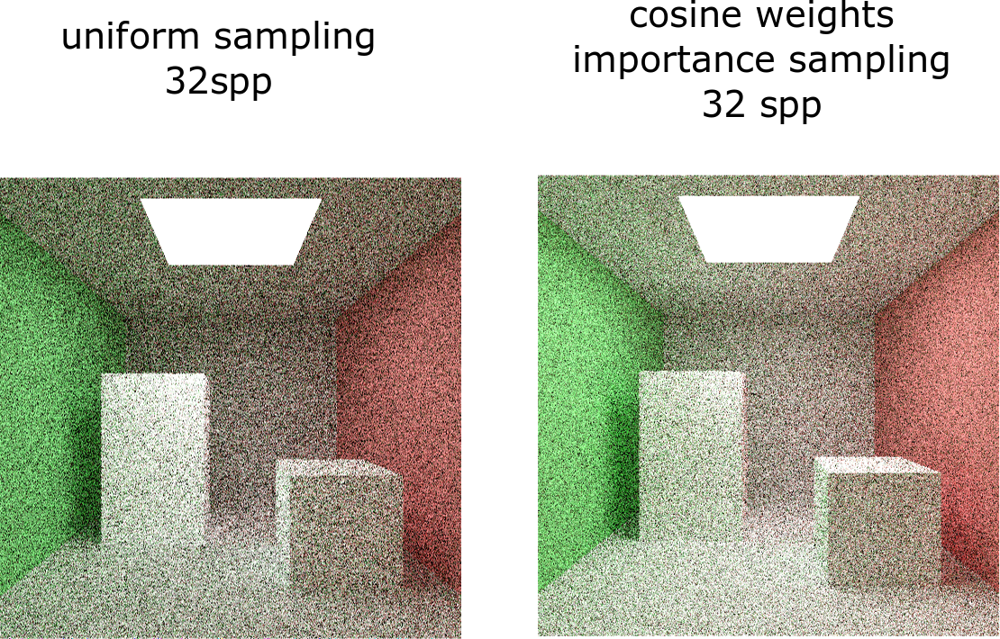
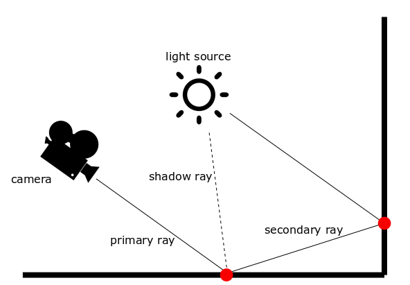
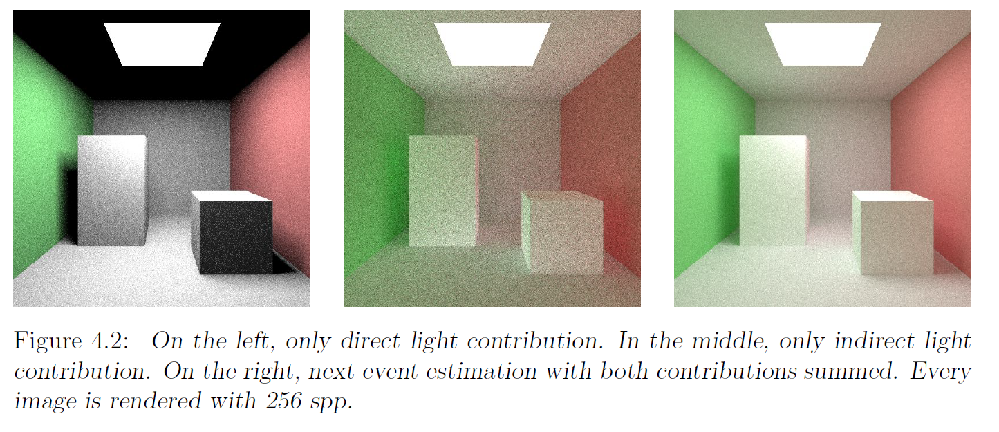
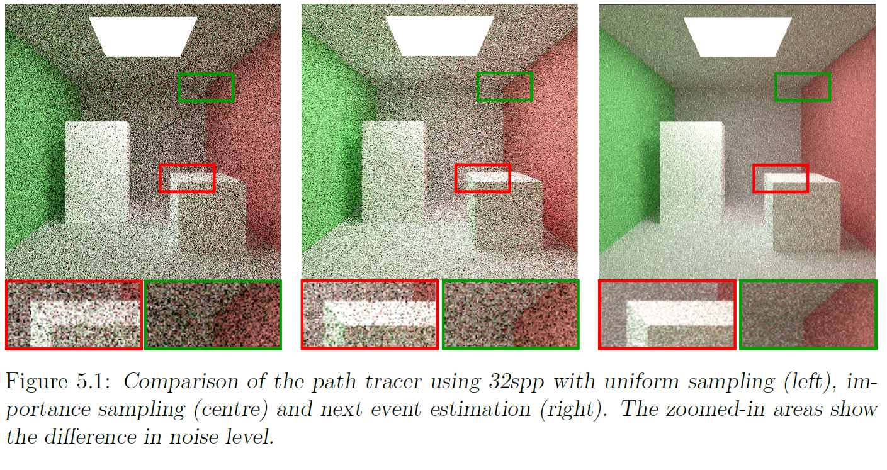

Monte Carlo Path Tracer

IMPORTANT
This project is the starting point of my Master thesis, a Research project conducted at TU Delft and TU Eindhoven. The thesis explores the application of Sparse Neural Networks in Reinforcement Learning for Physically Based Rendering. More specifically, the main contribution is to optimize Monte Carlo integration, learning the radiance in a scene and thus guiding the light path towards the light source.
This brief article shows two standard approaches for noise reduction, and it's addressed to people who are already familiar with the basic concepts of Physically Based Rendering. The article does not address the detailed math required to understand the implementation, which will be likely added after the publication of my thesis.
Introduction
The goal of this project is to develop a Path tracer and implement different techniques to reduce noise in rendered images. For a great introduction, I suggest the awesome book Physically Based Rendering: From Theory to Implementation written by Matt Pharr, Wenzel Jakob, and Greg Humphreys, and now free in its online version. An additional great resource is Scratchapixel.To understand this project, familiarity with ray tracing, path tracing, Monte Carlo statistics and Calculus is necessary.
I explored few techniques for noise reduction during rendering, as explained later. For more advanced Machine Learning techniques, you can refer to my other project .
The code includes multiple approaches and needs to be cleaned. I am experimenting for my thesis, I hope you will forgive me. You can check the GitHub Repository
Check full code
Learning goals
- Understand and Implement a naive path tracer in C++
- Improve Monte Carlo integration through cosine-weighted importance sampling
- Implement Direct light sampling
- Compare the different approaches
Physically based rendering
Physically based rendering (PBR) is an approach in computer graphics that tries to simulate the flow of light to render graphics as accurate as possible. PBR is used in the movie industry, in gaming, and in engineering.In practice, the aim is to approximate the Rendering equation to its correct value: $$ L_o(x, w_o) = L_e(x,w_o) + \int L_i(x, -w_i) \cdot f_r(x, w_i, w_o) \cdot cos\theta_i\ dw_i $$ Since the integral cannot be computed aritmetically, it needs to be approximated through multiple iterations.
The theory of Monte Carlo integration guarantees that the integrand can be approximated generating random samples `X_i` according to a probability density function `p(X_i)`. $$ F = \int_D f(x) dx \approx \frac{1}{n} \sum_{i=0}^{n-1} \frac{f(X_i)}{p(X_i)} $$ Since we are dealing with a statistical model, many different approaches to reduce the standard deviation were advanced along the years. These methods are usually based on Monte Carlo statistics, and lately Machine Learning.
Path tracer
Path tracing is a ray tracing algorithm, unbiased and consistent. This means that, as the number of samples scattered inside the scene increases, the approximation of the radiance gets closer to its real value. The Whitted ray tracer was a previous version that could only compute one bounce. Path tracing extends this through recursively computing the radiance inside the scene.I wrote the path tracer in C++, without using any third parties graphics library. This means that basic classes like Vector, Ray, Plane, Sphere, etc.. are implemented in pure C++.
As I am writing, this single-threaded path tracer is in a relatively basic version. It can compute correctly global illumination, it supports anti-aliasing and Russian Roulette stopping criterion, and can process rectangles and spheres. Rays are scattered based on Uniform scattering, Cosine-weighted importance sampling, and Direct light sampling (or Next event estimation). The main current limitation is that it only supports Lambertian materials, since they are faster to handle when Machine Learning driven importance sampling comes into play.
Uniform scattering
This type of scattering represents the easiest version of the path tracing algorithm. Rays are scattered based on a uniform distribution over the hemisphere on top of the hitting point, following a probability defined as: $$ p(w) = \frac{1}{2 \pi r^2} $$ where `r` is 1.In order to draw randomly generated samples with the chosen probability density functions in the C++ implementation, we need to retrieve Cartesian coordinates from spherical coordinates. Then, we need to express them as functions of randomly generated values `\xi_1` and `\xi_2`. $$ x = cos \varphi sin \theta = cos \left( 2 \pi \xi _{1} \right) \sqrt{xi _{2} \left( 2- \xi _{2} \right)} $$ $$ y=sin \varphi sin \theta = sin \left( 2 \pi \xi _{1} \right) \sqrt{ \xi _{2} \left( 2- \xi _{2} \right)} $$ $$ z=cos \theta =1- \xi _{2} $$ The BRDF `f_r(x, w_i, w_o)` for ideal Lambertian surfaces is simply `BRDF = \frac{\rho}{\pi}`, since by definition radiance is equally reflected into all directions.
To show some results, I rendered two images using this strategy:

The noise is due to the fact that not all the scattered rays hit the light source during their path. The highest the amount of scattered rays, the highest the noise reduction. This is why a highest amount of sample per pixel leads to a less noisy image.
The scene in the middle, with the light source blocked by a door, is an example of poor visibility. Same applies to the scene on the right, which is partially blocked by a cube. Light cannot be sampled directly, but only rays bouncing with specific directions can reach it. For this reason, these scenes are noisier and darker.
Is there a way to improve this solution?
Cosine-weighted importance sampling
In order to estimate the value of the rendering equation's integral as close as possible to the arithmetic solution, it is essential to get samples from those regions that lead to the highest contribution.Previously, we sampled uniformly over the hemisphere. Let's try to find a better way to do this.
The approximation of the intractable rendering equation requires, as first step, to find a proper Probability Density Function, which will be used to generate samples.
A common PDF for importance sampling in ray tracing is is: `f = \frac{cos\{theta} }{\pi}`.
Indeed, that is proportional to `cos\theta` like the rendering equation and so, following the equation closely, it helps reducing the variance. Let's remind that `\theta` is the angle between the scattered ray and the normal to the surface. Moreover, the term `\pi` allows micro-optimization in the calculation of the resulting radiance.
What does this probability density function mean in practice? Since the hemisphere is sampled proportionally to the cosine of `\theta`, rays are more likely to be scattered close to the normal, where `\theta` is smaller and the cosine is bigger. From physics, we know that these rays contribute more to the computation of the total incoming radiance.
As before, we need to express Cartesian coordinates from spherical coordinates as functions of randomly generated values. Calculating the cumulative density function for `\theta` and `\phi`, and considering the new pdf, we obtain: $$ x = cos \varphi sin \theta = cos \left( 2 \pi \xi _{1} \right) \sqrt{\xi _{2}} $$ $$ y = sin \varphi sin \theta = sin \left( 2 \pi \xi _{1} \right) \sqrt{\xi _{2}} $$ $$ z = cos \theta = \sqrt{1- \xi _{2}} $$ Now, the path tracer scatters according to this pdf. Improvements respect to uniform sampling are shown below:

Now, this new model yields better results than the previous one, as expected. As one might argue, cosine weighted importance sampling does not take into account the position of the light source. The algorithm prefers to scatter rays closer to the normal to the surface, but what if the light source is located far from this direction?
Next event estimation attempts to solve this problem.
Next event estimation
Even though cosine weighted importance sampling ensures the probability density function to follow the integrand in the rendering equation, this method does not take into account the position of light sources. On that account, convergence still remains problematic for small light sources. Moreover, since only paths that hit a light source contribute to the final radiance, a long path where no material with positive emittance was hit returns a radiance equal to zero. Clearly, this entails inefficiency due to a significant waste of computational power. Explicit light sampling, also known as next event estimation, is a technique developed to overcome this issue. The Figure shows a schematic overview of the path tracing algorithm with the implementation of explicit light sampling. The main different with the naive path tracer is that for every ray casted, one shadow ray is directly scattered towards the light source. The final radiance takes into account both the contribution of direct and reflected light. This approach is widely used in industry not only for of its simplicity and faster convergence, but also because it allows to manage direct and reflected contributions separately. This adds value for artistic purposes, and can help debugging the path tracer.
Ir's important to mention that indirect light is still sampled according to cosine weighted importance sampling
To compute the pdffor the direct light sampling, it's more convenient to express the integral over the hemisphere as an integral over the visible area seen from the point for which the incoming radiance is computed. Let's consider the point P, for which we are computing the radiance, and a point Q in the light source area. This relationship allows to calculate the inverse probability density function as: $$ \text{inverse pdf} = \frac{A \cdot cos(\theta_{iL})}{r^2} $$ where `cos(\theta_{iL})` is the cosine of the angle between the normal to the light surface and the vector linking the point P to Q.
Moreover, it's very important to check whether the rays scattered for indirect lightining hit the light source or not at every iteration. Otherwhise, we would overestimate the radiance coming from the light source, since we would sample it twice. Results can be seen below: 
Both importance sampling and importance sampling with next event estimation do not consider blockers between the point for which the integration is computed and the light source. This inevitably leads to a high number of scattered rays with zero contribution, unless visibility is considered.
Solving this issue is very complicated, but new methods, such as Metropolis or Reinforcement Learning, can help in learning the light path.
Final comparison
Finally, we can compare these three methods using 32 spp. As expected, Next event estimation with importance sampling generates the best result, followed by cosine weighted importance sampling and lastly uniform sampling.
In my next article, I will explore the concept of path guiding accoridng to a policy learned using Q-Learning. This approach was studied by Dahm and Keller and gives a beautiful example of how the structural similarity between the Bellman equation and the rendering equation can be used for path tracing.